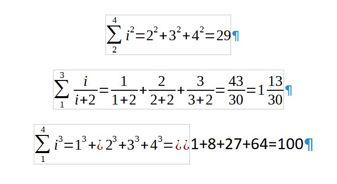
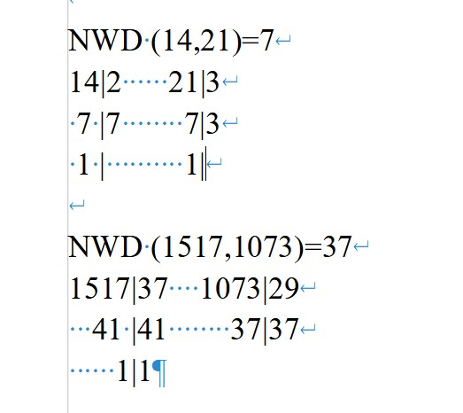

- Znak sumy sigma
Σ symbol sumowania Sigma symbol sumowania sigma jest znany przez większość jako symbol matematyczny, który wskazuje sumę.
Sigma Σ jest jednym z najpopularniejszych znaków matematycznych, co oznacza podsumowanie czegoś.
- Obliczenia

